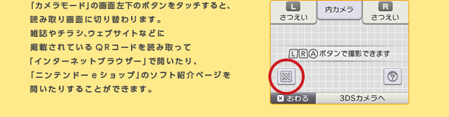
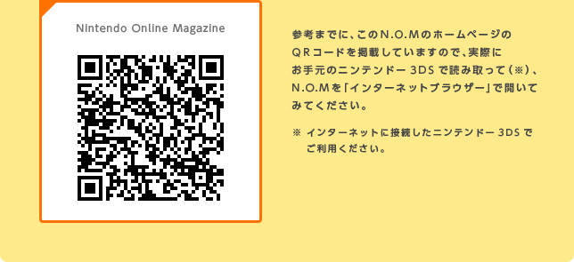

ニンテンドー3DSの本体更新を行ったら、さっそく3Dムービーの撮影にチャレンジしてみましょう。
『ニンテンドー3DSカメラ』を起動すると、下画面に新しく「ムービー」のアイコンが増えているはずです。これをタッチすると、撮影モードが静止画からムービーに切り替わります。ニンテンドー3DS本体の3Dボリュームを上げて、外カメラで撮影します（※）。
ここに掲載しているものは2Dで表示されますが、実際に撮影した3DS本体ではしっかり3Dで表示されています。L / R / Aボタンのいずれかを押すと撮影開始、もう一度押すと撮影終了です。撮影中は上画面にプレビューや撮影可能な残り時間が表示されるので、確認しながら撮影しましょう。
撮影が終わったら、下画面の「写真／ムービーを見る」で、いつでも再生することができます。ビックリするくらい簡単です。身近なものが立体的に見えて、しかも動くというのは、とても新鮮で、そこに小さな現実があるような不思議な感じがします。

また、3Dムービーの再生中に、「ムービーであそぶ」をタッチすると、下画面が切り替わります。グラフの中央の点をタッチペンで動かすと、ムービーの再生スピードや音声の音程を自由に変えて楽しむことができます。ごはんを食べているところを撮影して逆再生してみたり、演奏会のムービーの音程や速度を変えたりすると楽しいでしょう。筆者が撮影したオレンジジュースのムービーも、逆再生してみると、グラスのジュースがどんどん減っていくような不思議なムービーになり、意外な面白さがありました。
みなさんもぜひ、さまざまな場所で自分だけの3Dムービーを撮影して、家族やお友だちに、いろいろな方法で再生して見せてあげてください。3Dならではの臨場感に、みんなをきっとワクワクさせられるはずです。
3Dムービーの撮影を行うときに、下画面の赤いレバーをタッチすると、より細かな設定が行えるボタンが出てきます。一番右のボタンが、ここで紹介する「こだわりムービー」のボタンです。
「こだわりムービー」のボタンをタッチすると、「インターバル」「コマ撮り」「いいとこ撮り」のボタンが表示されます。それぞれ、ちょっと変わった3Dムービーを撮影できる機能になっています（※）。
掲載したムービーのような雲の流れる様子や、室内の鉢植えの花が開く様子など、ゆっくりと自然に動いたり、変化するものを撮影すると、早回ししたようなムービーが撮影できます。昆虫のさなぎなど、ほとんど動かないように見えるものでも、60秒間隔で1〜2時間ほど撮影してみると、意外に動いていて驚くかもしれません。「ムービーであそぶ」で再生速度を調整したり、撮影モードのカメラ設定で画面をセピア色にしてみたりと、機能を組み合わせてみてもよいでしょう。
ちなみに、インターバル撮影の際には、机の上などにニンテンドー3DSを固定しておくのがコツです。長時間撮影する場合には、バッテリーもしっかり充電しておきましょう。
人形やプラモデルなど、本来は動かないものを少しずつ動かしながら撮影して、短いストーリーのあるムービーを作るのに向いています。また少し手間はかかりますが、クロッキー帳に描いた絵や文字を間に入れたりしてみてもよいでしょう。



ニンテンドー3DSがますますパワーアップ
1. 『ニンテンドー3Dカメラ』でムービーも撮影可能に
2. 『すれちがいMii広場』に新しい遊びが増えました
3. ほかのニンテンドー3DS本体にデータを引っ越せます
4. 『ニンテンドーeショップ』で体験版を楽しもう